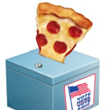
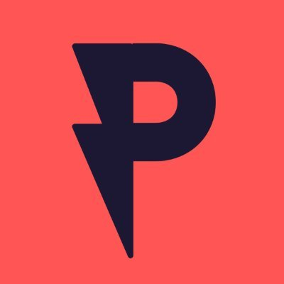
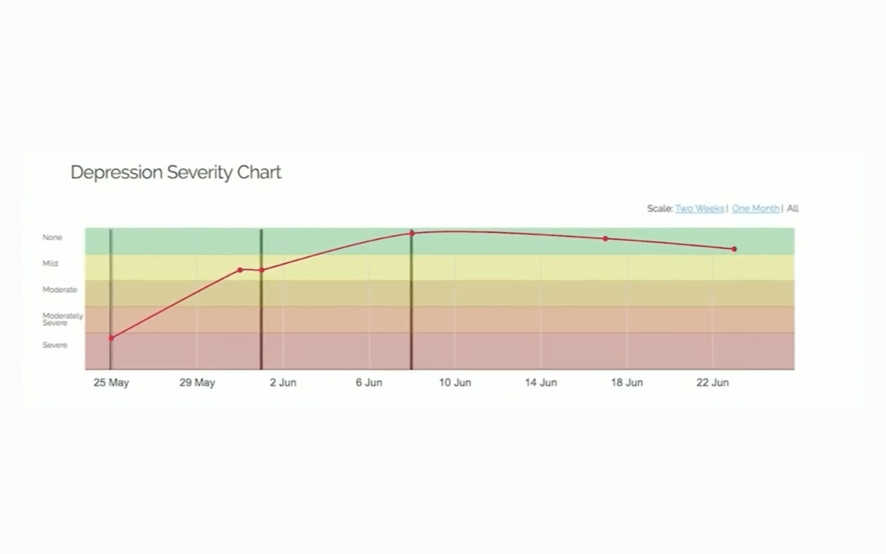

Selected work · 2016 → today
Small tools with big civic footprints.
I like building tools for folks doing good work. Some of those tools fed 104,000 pizzas to voters stuck in line, recruited 710,939 poll workers, and kept dozens of ketamine clinics in touch with their patients. Lately I point a small fleet of autonomous coding agents at the infrastructure behind it all — same mission, more automation.

Pizza to the Polls
Feeding voters (and poll workers) stuck in long lines — democracy shouldn't come with a rumbling stomach.
- Where
- Polling places, U.S.
- Since
- 2016, still going
- Reach
- 50 states

Power the Polls
Recruiting the next generation of poll workers when COVID threatened to close polling places.
- Where
- A national corporate-civic coalition
- Since
- 2020
- Reach
- 710,939 sign-ups

MoodMonitor
Daily text-message mood tracking for ketamine clinics — patients and doctors watching progress together.
- Where
- Ketamine clinics, U.S.
- Since
- 2016
- Reach
- 50+ clinics
- Status
- Merged into Osmind, 2020
The numbers · live from polls.pizza
Press · verified
"Feel Inspired, America"
The New York Times — Opinion
"$1.4 million… 66,000 free pizzas to hungry voters"
Business Insider
"A career in politics and tech"
The Great Battlefield — podcast, 2025
Day jobs
I've spent the last seven years leading engineering teams by day: Zapier from 2018 to 2022 — backend engineer on the partner platform, then managing the Email and Explore teams — and Shopify since 2022, as an Engineering Manager in the Ecosystem group helping third-party developers grow their businesses — and for the past year on the New Markets growth team, helping Shopify expand in international markets. The full history is on the résumé →
Everything else
Twenty more projects — from Rails voter-guide engines to the Bus Project's WordPress fleet, 2012 → today. Browse the whole collection →